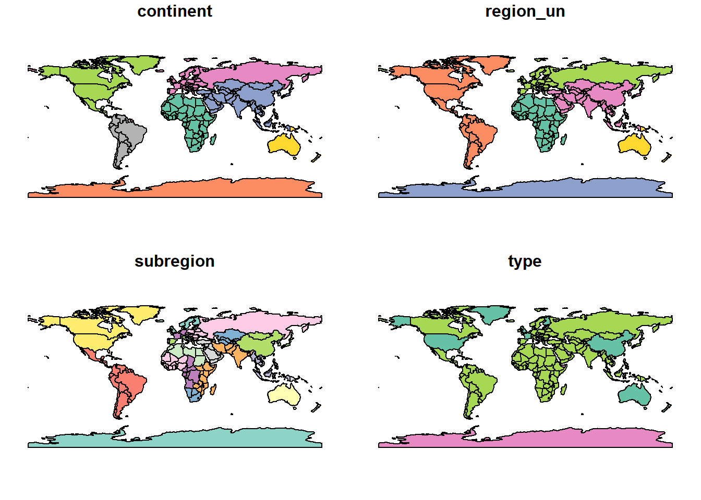
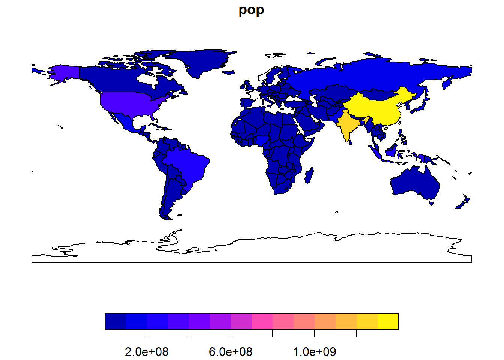
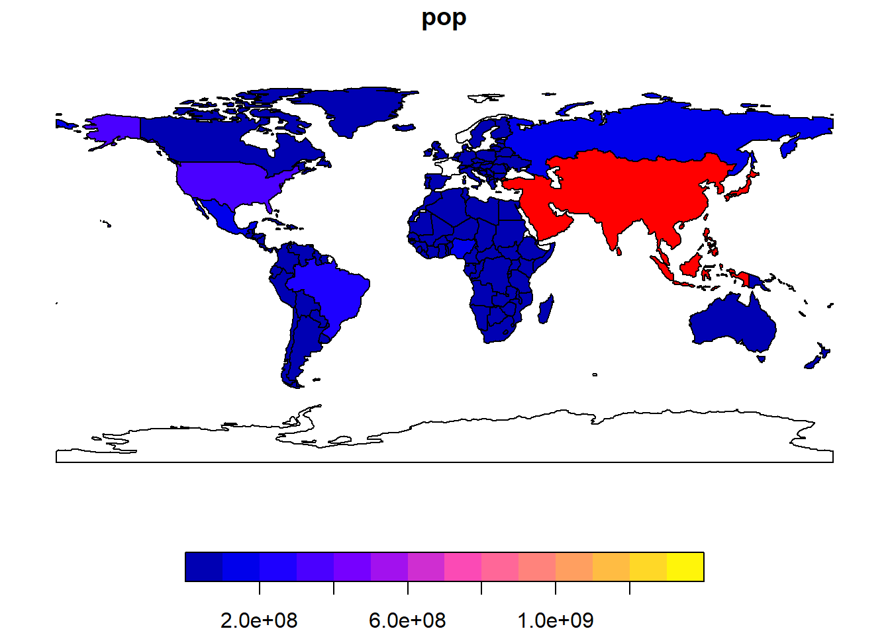
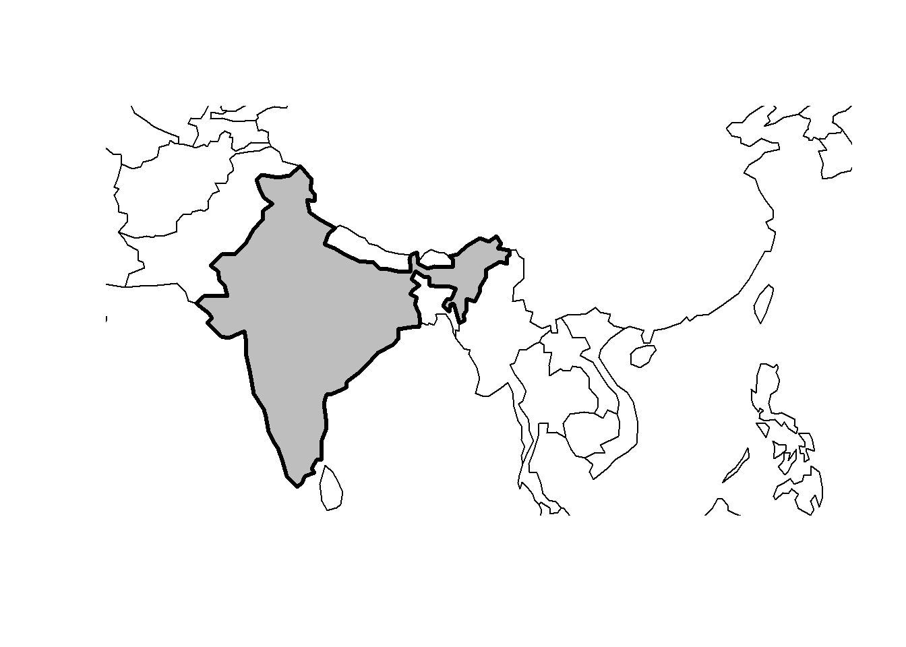

# install.packages("sf")
# install.packages("terra")
# install.packages("spData")
# install.packages("spDataLarge", repos = "https://nowosad.r-universe.dev")2. Geographic Data in R
Geographic Data in R
Next, install all dependencies required to reproduce the entire book (warning: this may take several minutes):
# remotes::install_github("geocompx/geocompkg", dependencies = TRUE)‘Load’ (technically they are attached) all installed libraries with the library() function as follows:
library(sf) # classes and functions for vector dataWarning: package 'sf' was built under R version 4.3.2Linking to GEOS 3.11.2, GDAL 3.7.2, PROJ 9.3.0; sf_use_s2() is TRUE#> Linking to GEOS 3.10.2, GDAL 3.4.1, PROJ 8.2.1; sf_use_s2() is TRUE
library(terra) # classes and functions for raster dataWarning: package 'terra' was built under R version 4.3.2terra 1.7.65library(spData) # load geographic dataWarning: package 'spData' was built under R version 4.3.2library(spDataLarge) # load larger geographic dataWarning: package 'spDataLarge' was built under R version 4.3.22.1 Introduction
- Goal: Explain fundamental of geographic data models: vector and raster
- vector data model
- represents the world using points, lines and polygons.
- have discrete, well-defined borders, meaning that vector datasets usually have a high level of precision
- based on points located within a coordinate reference system (CRS)
- Points can represent self-standing features (e.g., the location of a bus stop)
- or they can be linked together to form more complex geometries such as lines and polygons.
- Most point geometries contain only two dimensions(i.e. x/y or lat/long) (much less prominent 3-dimensional geometries contain an additional z value, typically representing height above sea level)
- Coordinate reference system (CRS) defines, with the help of coordinates, how the two-dimensional, projected map is related to real locations on the earth.
- raster data model
- divides the surface up into cells of constant size.
- basis of background images used in web-mapping
- have been a vital source of geographic data since the origins of aerial photography and satellite-based remote sensing devices.
- aggregate spatially specific features to a given resolution, meaning that they are consistent over space and scalable (many worldwide raster datasets are available)
2.2.1 An introduction to simple features
Simple features(sf) is an open standard developed and endorsed by the Open Geospatial Consortium (OGC)
sf is hierarchical data model that represents a wide range of geometry types(18, only 7 are used in the vast majority of geographic research - point, linestring, polygon, multipoint, multilinestring, multipolygon, geometrycollection)
sf package provides classes for geographic vector data and a consistent command-line interface to important low level libraries for geocomputation:
- GDAL, for reading, writing and manipulating a wide range of geographic data formats
- PROJ, a powerful library for coordinate system transformations
- GEOS, a planar geometry engine for operations such as calculating buffers and centroids on data with a projected CRS
- S2, a spherical geometry engine written in C++ developed by Google, via the s2 package
sf provides the same functionality (and more) previously provided in three packages — sp for data classes, rgdal for data read/write via an interface to GDAL and PROJ and rgeos for spatial operations via an interface to GEOS
simple feature objects in R are stored in a data frame, with geographic data occupying a special column, usually named ‘geom’ or ‘geometry’.
class(world)[1] "sf" "tbl_df" "tbl" "data.frame"names(world) [1] "iso_a2" "name_long" "continent" "region_un" "subregion" "type"
[7] "area_km2" "pop" "lifeExp" "gdpPercap" "geom" - The contents of this geom column give
sfobjects their spatial powers:
world$geom Geometry set for 177 features
Geometry type: MULTIPOLYGON
Dimension: XY
Bounding box: xmin: -180 ymin: -89.9 xmax: 180 ymax: 83.64513
Geodetic CRS: WGS 84
First 5 geometries:MULTIPOLYGON (((-180 -16.55522, -179.9174 -16.5...MULTIPOLYGON (((33.90371 -0.95, 31.86617 -1.027...MULTIPOLYGON (((-8.66559 27.65643, -8.817828 27...MULTIPOLYGON (((-132.71 54.04001, -133.18 54.16...MULTIPOLYGON (((-171.7317 63.78252, -171.7911 6...# is a ‘list column’ that contains all the coordinates of the country polygons.- geometry columns are ‘list columns’ of class sfc
class(world$geom)[1] "sfc_MULTIPOLYGON" "sfc" - sf objects can be plotted quickly with the function plot()
# plot()ing sf objects results in a map for each variable in the datasets.
# useful for exploring the spatial distribution of different variables
plot(world)Warning: plotting the first 9 out of 10 attributes; use max.plot = 10 to plot
all
- advantage of treating geographic objects as regular data frames with spatial powers i.e. you can execute similar functions related to the data frame objects
summary(world["lifeExp"]) lifeExp geom
Min. :50.62 MULTIPOLYGON :177
1st Qu.:64.96 epsg:4326 : 0
Median :72.87 +proj=long...: 0
Mean :70.85
3rd Qu.:76.78
Max. :83.59
NA's :10 Note the ‘sticky’ behavior of the geometry columns of sf objects, meaning the geometry is kept unless the user deliberately removes them as shown below.
world_df = st_drop_geometry(world)
class(world_df)[1] "tbl_df" "tbl" "data.frame"ncol(world_df)[1] 10Subsetting sf objects
The output shows two major differences compared with a regular data.frame: the inclusion of additional geographic metadata (Geometry type, Dimension, Bounding box and coordinate reference system information), and the presence of a ‘geometry column’, here named geom:
world_mini = world[1:2, 1:3]
world_miniSimple feature collection with 2 features and 3 fields
Geometry type: MULTIPOLYGON
Dimension: XY
Bounding box: xmin: -180 ymin: -18.28799 xmax: 180 ymax: -0.95
Geodetic CRS: WGS 84
# A tibble: 2 × 4
iso_a2 name_long continent geom
<chr> <chr> <chr> <MULTIPOLYGON [°]>
1 FJ Fiji Oceania (((-180 -16.55522, -179.9174 -16.50178, -179.7933 …
2 TZ Tanzania Africa (((33.90371 -0.95, 31.86617 -1.02736, 30.76986 -1.…Building blocks of sf objects
- spatial columns are often called geom or geometry i.e.
world$geomwhich are ‘list columns’ of classsfcsfcobjects are composed of one or more objects of classsfg: simple feature geometries
2.2.2 Why simple features?
- widely supported data model that underlies data structures in many GIS applications including QGIS and PostGIS which ensures your work is cross-transferable to other setups, e.g. importing from and exporting to spatial databases.
“why use the sf package”?
Fast reading and writing of data
Enhanced plotting performance
sf objects can be treated as data frames in most operations
sf function names are relatively consistent and intuitive (all begin with st_)
sf functions can be combined with the |> operator and works well with the tidyverse collection of R packages.
sf’s support for tidyverse packages is exemplified by the difference in the read_sf(), a function for importing geographic vector data and the function st_read(), which returns attributes stored in a base R data.frame. read_sf() silently returns data as a tidyverse tibble:
world_dfr = st_read(system.file("shapes/world.shp", package = "spData"))Reading layer `world' from data source
`C:\Users\bilqi\AppData\Local\R\win-library\4.3\spData\shapes\world.shp'
using driver `ESRI Shapefile'
Simple feature collection with 177 features and 10 fields
Geometry type: MULTIPOLYGON
Dimension: XY
Bounding box: xmin: -180 ymin: -89.9 xmax: 180 ymax: 83.64513
Geodetic CRS: WGS 84world_tbl = read_sf(system.file("shapes/world.shp", package = "spData"))
class(world_dfr)[1] "sf" "data.frame"class(world_tbl)[1] "sf" "tbl_df" "tbl" "data.frame"2.2.3 Basic map making
plot(world[3:6])
plot(world["pop"])
- Plots are added as layers to existing images by setting add = TRUE
Example: filter countries in Asia and combines them into a single feature:
world_asia = world[world$continent == "Asia", ]
asia = st_union(world_asia)
# ?st_union# run the two lines of code together
plot(world["pop"], reset = FALSE)
plot(asia, add = TRUE, col = "red")
#plot(asia, add = TRUE, col = "red")- To be covered in details in Chapter 5
# plot(world["continent"], reset = FALSE)
# cex = sqrt(world$pop) / 10000
# world_cents = st_centroid(world, of_largest = TRUE)
# plot(st_geometry(world_cents), add = TRUE, cex = cex)Map bounding box
sf’s plot method also has arguments specific to geographic data. expandBB, for example, can be used to plot an sf object in context: it takes a numeric vector of length four that expands the bounding box of the plot relative to zero in the following order: bottom, left, top, right.
india = world[world$name_long == "India", ]
plot(st_geometry(india), expandBB = c(0, 0.2, 0.1, 1), col = "gray", lwd = 3)
plot(st_geometry(world_asia), add = TRUE)
# plot(india)
#?st_geometry - Get, set, replace or rename geometry from an sf object
# col - color
# lwd - line width2.2.4 Geometry types
seven most commonly used types: POINT, LINESTRING, POLYGON, MULTIPOINT, MULTILINESTRING, MULTIPOLYGON and GEOMETRYCOLLECTION
standard encoding for simple feature geometries:
- well-known binary (WKB)
- hexadecimal strings easily readable for computers
- GIS and spatial databases use WKB to transfer and store geometry objects
- well-known text (WKT)
- human-readable text markup description of simple features
- well-known binary (WKB)
Both formats are exchangeable, and if we present one, we will naturally choose the WKT representation
The basis for each geometry type is the point. A point is simply a coordinate in 2D, 3D or 4D space
- POINT (5 2)
A linestring is a sequence of points with a straight line connecting the points, for example (Figure 2.8, middle panel):
- LINESTRING (1 5, 4 4, 4 1, 2 2, 3 2)
A polygon is a sequence of points that form a closed, non-intersecting ring. Closed means that the first and the last point of a polygon have the same coordinates (Figure 2.8, right panel).13
- Polygon without a hole: POLYGON ((1 5, 2 2, 4 1, 4 4, 1 5))
Simple feature standard also allows multiple geometries of a single type to exist within a single feature within “multi” version of each geometry type
- Multipoint: MULTIPOINT (5 2, 1 3, 3 4, 3 2)
- Multilinestring: MULTILINESTRING ((1 5, 4 4, 4 1, 2 2, 3 2), (1 2, 2 4))
- Multipolygon: MULTIPOLYGON (((1 5, 2 2, 4 1, 4 4, 1 5), (0 2, 1 2, 1 3, 0 3, 0 2)))
Geometry collection can contain any combination of geometries including (multi)points and linestrings (see Figure 2.10):
- Geometry collection: GEOMETRYCOLLECTION (MULTIPOINT (5 2, 1 3, 3 4, 3 2), LINESTRING (1 5, 4 4, 4 1, 2 2, 3 2))
2.2.5 The sf class
- two main parts: geometries and non-geographic attributes
- geometries come from an sfc object, while attributes are taken from a data.frame or tibble
Illustration
lnd_point = st_point(c(0.1, 51.5)) # simple feature geometry (sfg)
lnd_geom = st_sfc(lnd_point, crs = "EPSG:4326") # simple feature geometry column (sfc) with a CRS
lnd_attrib = data.frame(
# attributes were stored in a data.frame
name = "London",
temperature = 25,
date = as.Date("2023-06-21")
)
# combine data frame with the sfc object with st_sf()
lnd_sf = st_sf(lnd_attrib, geometry = lnd_geom) # sf objectLet’s examine the sf object
lnd_sfSimple feature collection with 1 feature and 3 fields
Geometry type: POINT
Dimension: XY
Bounding box: xmin: 0.1 ymin: 51.5 xmax: 0.1 ymax: 51.5
Geodetic CRS: WGS 84
name temperature date geometry
1 London 25 2023-06-21 POINT (0.1 51.5)#result shows that sf objects actually have two classes, sf and data.frameSummarily, Simple features are simply data frames (square tables), but with spatial attributes stored in a list column, usually called geometry or geom. That is, data frames with a spatial extension.
2.2.6 Simple feature geometries (sfg)
sfg class represents the different simple feature geometry types in R: point, linestring, polygon (and their ‘multi’ equivalents, such as multipoints) or geometry collection.
set of functions to create simple feature geometry objects (sfg) from scratch.
- functions are simple and consistent, as they all start with the st_ prefix and end with the name of the geometry type in lowercase letters:
- A point:
st_point() - A linestring:
st_linestring() - A polygon:
st_polygon() - A multipoint:
st_multipoint() - A multilinestring:
st_multilinestring() - A multipolygon:
st_multipolygon() - A geometry collection:
st_geometrycollection()
- A point:
- functions are simple and consistent, as they all start with the st_ prefix and end with the name of the geometry type in lowercase letters:
sfg objects can be created from three base R data types:
- A numeric vector: a single point
st_point(c(5, 2)) # XY point - XY (2D coordinates)POINT (5 2)#> POINT (5 2)
st_point(c(5, 2, 3)) # XYZ point - XYZ (3D coordinates) POINT Z (5 2 3)#> POINT Z (5 2 3)
st_point(c(5, 2, 1), dim = "XYM") # XYM point - XYM type must be specified using the dim argument (which is short for dimension)POINT M (5 2 1)#> POINT M (5 2 1)
st_point(c(5, 2, 3, 1)) # XYZM point - XYZM (3D with an additional variable, typically measurement accuracy)POINT ZM (5 2 3 1)#> POINT ZM (5 2 3 1)Let’s create the maps
#install.packages("mapview")
library(mapview)Warning: package 'mapview' was built under R version 4.3.2mapview(st_point(c(5, 2)))A matrix: a set of points, where each row represents a point, a multipoint or linestring
- MULTIPOINT
# the rbind function simplifies the creation of matrices
## MULTIPOINT
multipoint_matrix = rbind(c(5, 2), c(1, 3), c(3, 4), c(3, 2))
st_multipoint(multipoint_matrix)MULTIPOINT ((5 2), (1 3), (3 4), (3 2))#> MULTIPOINT ((5 2), (1 3), (3 4), (3 2))
## LINESTRING
linestring_matrix = rbind(c(1, 5), c(4, 4), c(4, 1), c(2, 2), c(3, 2))
st_linestring(linestring_matrix)LINESTRING (1 5, 4 4, 4 1, 2 2, 3 2)#> LINESTRING (1 5, 4 4, 4 1, 2 2, 3 2)Create the map
mapview(st_multipoint(multipoint_matrix))A list: a collection of objects such as matrices, multilinestrings or geometry collections
- POLYGON
## POLYGON
polygon_list = list(rbind(c(1, 5), c(2, 2), c(4, 1), c(4, 4), c(1, 5)))
st_polygon(polygon_list)POLYGON ((1 5, 2 2, 4 1, 4 4, 1 5))#> POLYGON ((1 5, 2 2, 4 1, 4 4, 1 5))Create the map
mapview(st_polygon(polygon_list))- POLYGON with a hole
## POLYGON with a hole
polygon_border = rbind(c(1, 5), c(2, 2), c(4, 1), c(4, 4), c(1, 5))
polygon_hole = rbind(c(2, 4), c(3, 4), c(3, 3), c(2, 3), c(2, 4))
polygon_with_hole_list = list(polygon_border, polygon_hole)
st_polygon(polygon_with_hole_list)POLYGON ((1 5, 2 2, 4 1, 4 4, 1 5), (2 4, 3 4, 3 3, 2 3, 2 4))#> POLYGON ((1 5, 2 2, 4 1, 4 4, 1 5), (2 4, 3 4, 3 3, 2 3, 2 4))Create the map
mapview(st_polygon(polygon_with_hole_list))- MULTILINESTRING
## MULTILINESTRING
multilinestring_list = list(rbind(c(1, 5), c(4, 4), c(4, 1), c(2, 2), c(3, 2)),
rbind(c(1, 2), c(2, 4)))
st_multilinestring(multilinestring_list)MULTILINESTRING ((1 5, 4 4, 4 1, 2 2, 3 2), (1 2, 2 4))#> MULTILINESTRING ((1 5, 4 4, 4 1, 2 2, 3 2), (1 2, 2 4))Create the map
mapview(st_multilinestring(multilinestring_list))- MULTIPOLYGON
## MULTIPOLYGON
multipolygon_list = list(list(rbind(c(1, 5), c(2, 2), c(4, 1), c(4, 4), c(1, 5))),
list(rbind(c(0, 2), c(1, 2), c(1, 3), c(0, 3), c(0, 2))))
st_multipolygon(multipolygon_list)MULTIPOLYGON (((1 5, 2 2, 4 1, 4 4, 1 5)), ((0 2, 1 2, 1 3, 0 3, 0 2)))#> MULTIPOLYGON (((1 5, 2 2, 4 1, 4 4, 1 5)), ((0 2, 1 2, 1 3, 0 3, 0 2)))- GEOMETRYCOLLECTION
## GEOMETRYCOLLECTION
geometrycollection_list = list(st_multipoint(multipoint_matrix),
st_linestring(linestring_matrix))
st_geometrycollection(geometrycollection_list)GEOMETRYCOLLECTION (MULTIPOINT ((5 2), (1 3), (3 4), (3 2)), LINESTRING (1 5, 4 4, 4 1, 2 2, 3 2))#> GEOMETRYCOLLECTION (MULTIPOINT (5 2, 1 3, 3 4, 3 2),
#> LINESTRING (1 5, 4 4, 4 1, 2 2, 3 2))